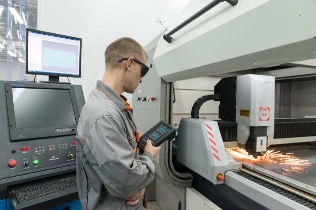

Nuestras Tecnicaturas
Tecnicatura Superior en Análisis de Sistemas
Es el profesional capacitado para diagnosticar necesidades, diseñar, desarrollar, poner en servicio y mantener productos, servicios o soluciones informáticas acorde a los requerimientos de las organizaciones.
Tendrá la capacidad de diagnosticar el conflicto de una organización, podrá ordenar sus recursos y actividades, además diseñar y desarrollar sistemas informáticos.
Tecnicatura Superior en Administración Contable
El Técnico Superior en Administración Contable es un profesional que estará capacitado para desarrollar las competencias para: organizar, programar, ejecutar y controlar las operaciones comerciales, financieras y administrativas de la organización; elaborar, controlar y registrar el flujo de información; organizar y planificar los recursos referidos para desarrollar sus actividades interactuando con el entorno y participando en la toma de decisiones relacionadas con sus actividades. Coordinando equipos de trabajo relacionado con su especialidad. Estas competencias serán desarrolladas según las incumbencias y las normas técnicas y legales que rigen su campo profesional.
Tecnicatura Superior en Gestión Ambiental y Salud
Es el profesional con formación científica, tecnológica y ética, competente para la intervención en los procesos técnicos y específicos del campo de la gestión ambiental. Diseñará y ejecutará planes y programas tendientes a la vigilancia ambiental y sanitaria, en ámbitos urbanos y rurales.
Tendrá la capacidad de coordinar actividades de protección y promoción de la salud ambiental e implementar estrategias de atención primaria.
Tecnicatura Superior en Higiene y Seguridad en el Trabajo
Es el profesional capacitado para el asesoramiento a reparticiones, empresas y asociaciones profesionales en todo lo concerniente a su actividad. Estará habilitado para controlar el cumplimiento de las normas de seguridad e higiene en el trabajo en el área de su competencia, adoptando las medidas preventivas de acuerdo a cada tipo de industria o actividad. Tendrá la capacidad de elaborar normas manuales de higiene y seguridad en el trabajo, además de realizar tareas de investigación y desarrollo para el mejor desenvolvimiento de su labor.

Tecnicatura Superior en Mantenimiento Industrial
Es el profesional que tendrá como propósito identificar problemas, buscar alternativas y tomar decisiones ante la presencia de fallas. A su vez, estará habilitado para evaluar situaciones y diseñar propuestas de mejora en el mantenimiento. Tendrá la capacidad de la organización del trabajo propio y de los otros a su cargo. Podrá formular y ejecutar planes de mantenimiento preventivo y predictivo óptimos, en función de los mecanismos de deterioros detectados. Tendrá además la habilidad para inspeccionar e identificar el estado de deterioro de un equipo para lograr su restauración, mejorando la confiabilidad y mantenibilidad del mismo.
Tecnicatura Superior en Administración de Recursos Humanos
Es el profesional capacitado para organizar, programar, planificar y ejecutar diversas actividades del sector de Recursos Humanos de las organizaciones en las cuales se inserte. Tendrá la capacidad de organizar, programar, ejecutar y controlar en las áreas de desarrollo de dirección y planeamiento, producción, recursos humanos, financiamiento, contabilización, gestión integral dentro de los distintos tipos de organización.
Tecnicatura Superior en Logística
Es el profesional capacitado para gestionar, diseñar, implementar, evaluar y optimizar los procesos que componen la administración del flujo de materiales y servicios desde el proveedor hasta el cliente. Tendrá la capacidad de implementar técnicas que faciliten la toma de decisiones y procedimientos para la gestión en el área, de acuerdo a los marcos conceptuales que sustentan los principios y normas pertinente al campo de la logística.